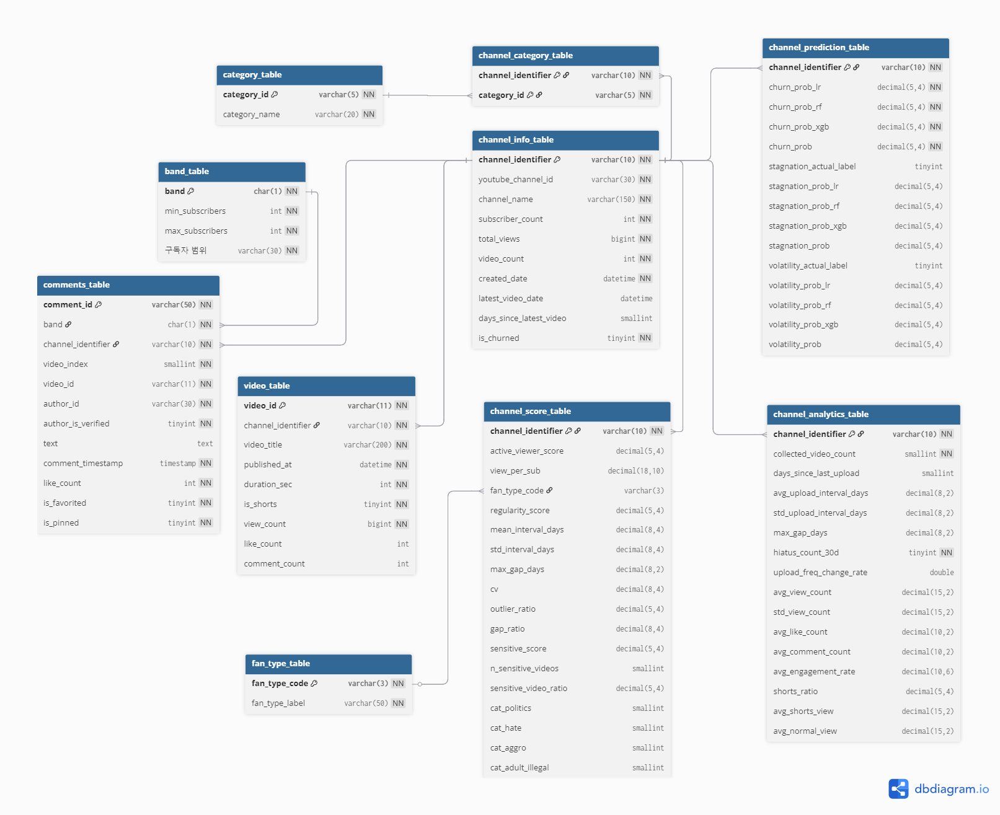

<section class="slide">
  <div class="slide-divider"></div>
  <h2 class="slide-title">ERD 구조도</h2>

  <div class="slide-body">
    <div>
      <div class="card" style="padding:14px;">
        
      </div>
    </div>
  </div>

  <div class="slide-footer">
    <span>12. ERD 구조도</span>
    <span>SKN30 · 너놀자</span>
  </div>
</section>
